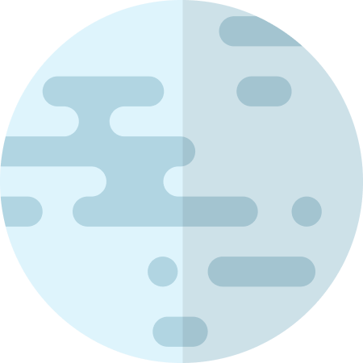
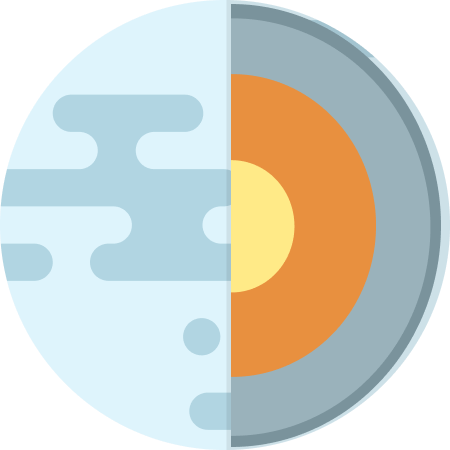
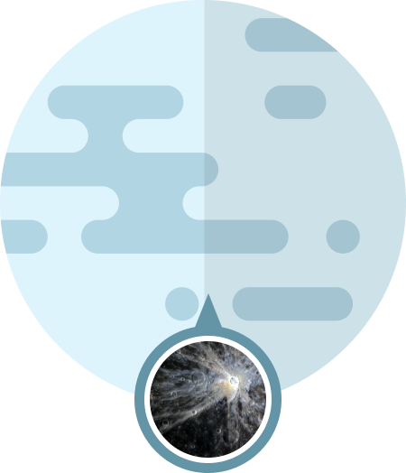
MERCURY
Mercury is the smallest planet in the Solar System and the closest to the Sun. Its orbit around the Sun takes 87.97 Earth days, the shortest of all the Sun's planets. Mercury is one of four terrestrial planets in the Solar System, and is a rocky body like Earth.
Mercury appears to have a solid silicate crust and mantle overlying a solid, iron sulfide outer core layer, a deeper liquid core layer, and a solid inner core. The planet's density is the second highest in the Solar System at 5.427 g/cm3 , only slightly less than Earth's density.
Mercury's surface is similar in appearance to that of the Moon, showing extensive mare-like plains and heavy cratering, indicating that it has been geologically inactive for billions of years. It is more heterogeneous than either Mars's or the Moon’s.
ROTATION TIME
58.6 DAYS
REVOLUTION TIME
87.97 DAYS
RADIUS
2,439.7 KM
AVERAGE TEMP.
430°C
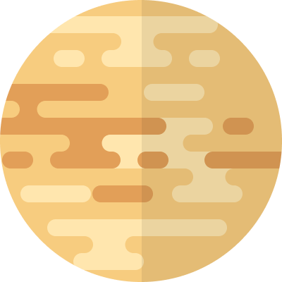
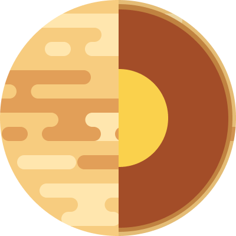
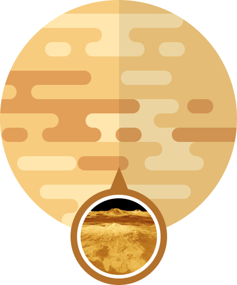
VENUS
Venus is the second planet from the Sun. It is named after the Roman goddess of love and beauty. As the brightest natural object in Earth's night sky after the Moon, Venus can cast shadows and can be, on rare occasions, visible to the naked eye in broad daylight.
The similarity in size and density between Venus and Earth suggests they share a similar internal structure: a core, mantle, and crust. Like that of Earth, Venusian core is most likely at least partially liquid because the two planets have been cooling at about the same rate.
Much of the Venusian surface appears to have been shaped by volcanic activity. Venus has several times as many volcanoes as Earth, and it has 167 large volcanoes that are over 100 km (60 mi) across. The only volcanic complex of this size on Earth is the Big Island of Hawaii.
ROTATION TIME
243 DAYS
REVOLUTION TIME
224.7 DAYS
RADIUS
6,051.8 KM
AVERAGE TEMP.
471°C
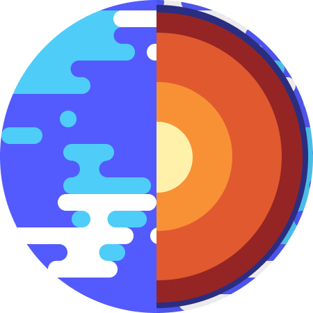
EARTH
Third planet from the Sun and the only known planet to harbor life. About 29.2% of Earth's surface is land with remaining 70.8% is covered with water. Earth's distance from the Sun, physical properties and geological history have allowed life to evolve and thrive.
Earth's interior, like that of the other terrestrial planets, is divided into layers by their chemical or physical (rheological) properties. The outer layer is a chemically distinct silicate solid crust, which is underlain by a highly viscous solid mantle.
The total surface area of Earth is about 510 million km2. The continental crust consists of lower density material such as the igneous rocks granite and andesite. Less common is basalt, a denser volcanic rock that is the primary constituent of the ocean floors.
ROTATION TIME
0.99 DAYS
REVOLUTION TIME
365.26 DAYS
RADIUS
6,371 KM
AVERAGE TEMP.
16°C
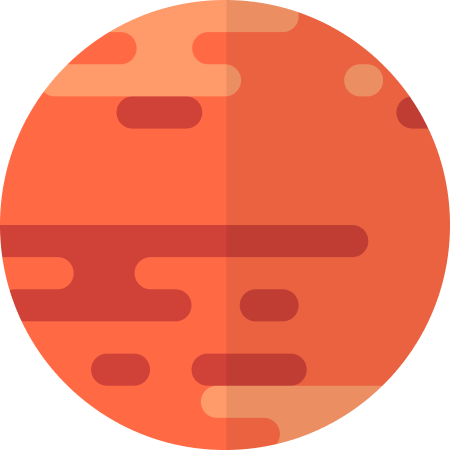
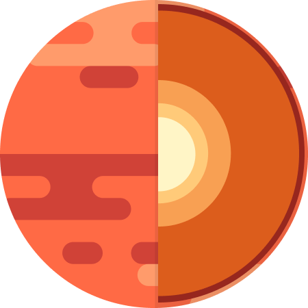
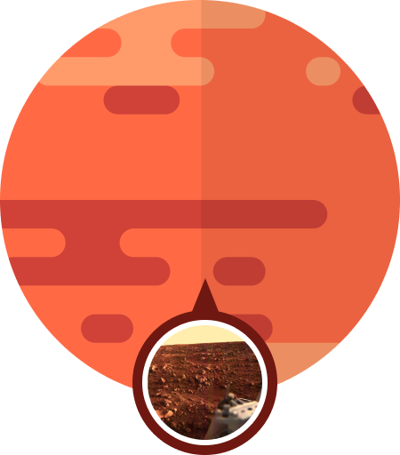
MARS
Mars is the fourth planet from the Sun and the second-smallest planet in the Solar System, being larger than only Mercury. In English, Mars carries the name of the Roman god of war and is often referred to as the "Red Planet".
Like Earth, Mars has differentiated into a dense metallic core overlaid by less dense materials. Scientists initially determined that the core is at least partially liquid. Current models of its interior imply a core consisting primarily of iron and nickel with about 16–17% sulfur.
Mars is a terrestrial planet whose surface consists of minerals containing silicon and oxygen, metals, and other elements that typically make up rock. The surface is primarily composed of tholeiitic basalt, although parts are more silica-rich than typical basalt.
ROTATION TIME
1.03 DAYS
REVOLUTION TIME
1.88 DAYS
RADIUS
3,389.5 KM
AVERAGE TEMP.
−28°C
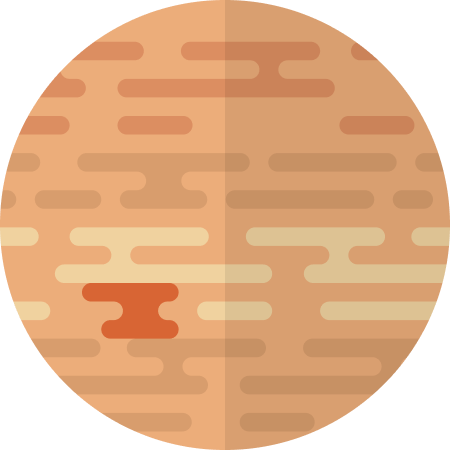
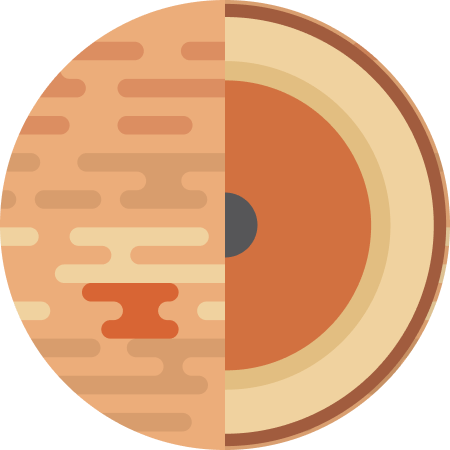
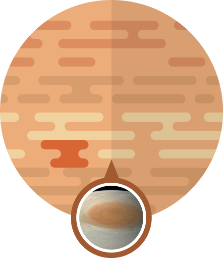
JUPITER
Jupiter is the fifth planet from the Sun and the largest in the Solar System. It is a gas giant with a mass two and a half times that of all the other planets in the Solar System combined, but less than one-thousandth the mass of the Sun.
When the Juno arrived in 2016, it found that Jupiter has a very diffuse core that mixes into its mantle. A possible cause is an impact from a planet of about ten Earth masses a few million years after Jupiter's formation, which would have disrupted an originally solid Jovian core.
The best known feature of Jupiter is the Great Red Spot, a persistent anticyclonic storm located 22° south of the equator. It is known to have existed since at least 1831, and possibly since 1665.
ROTATION TIME
9.93 HOURS
REVOLUTION TIME
11.86 YEARS
RADIUS
69,911 KM
AVERAGE TEMP.
-108°C
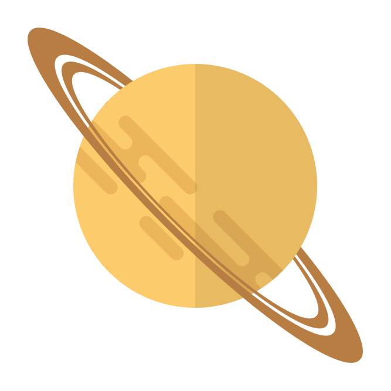
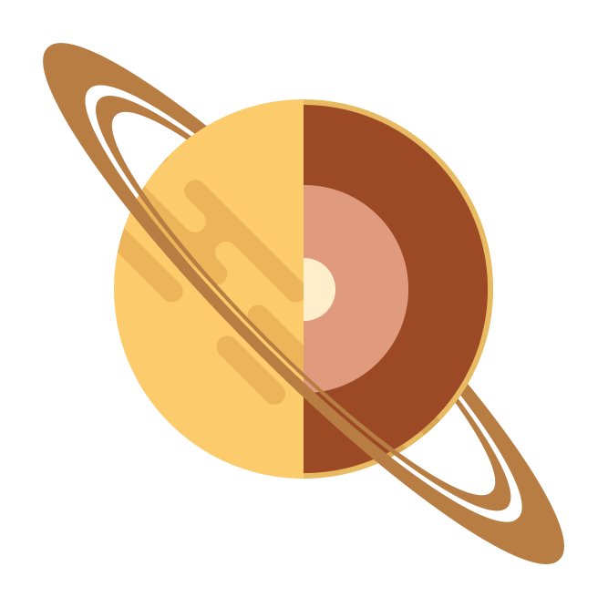
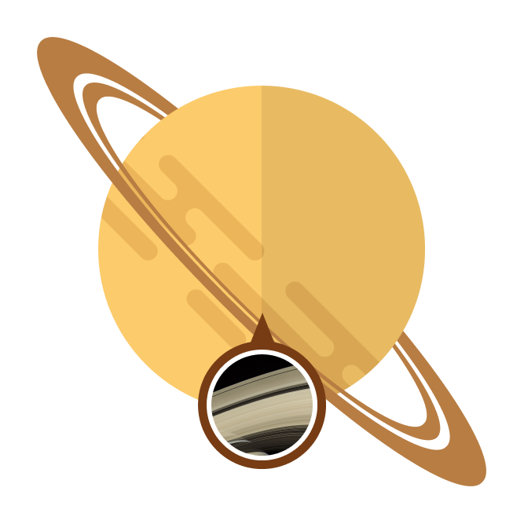
SATURN
Saturn is the sixth planet from the Sun and the second-largest in the Solar System, after Jupiter. It is a gas giant with an average radius of about nine and a half times that of Earth. It only has one-eighth the average density of Earth.
Despite consisting mostly of hydrogen and helium, most of Saturn's mass is not in the gas phase, because hydrogen becomes a non-ideal liquid when the density is above 0.01 g/cm3, which is reached at a radius containing 99.9% of Saturn's mass.
The outer atmosphere of Saturn contains 96.3% molecular hydrogen and 3.25% helium by volume. The planet's most famous feature is its prominent ring system, which is composed mostly of ice particles with a smaller amount of rocky debris and dust. .
ROTATION TIME
10.8 HOURS
REVOLUTION TIME
29.46 YEARS
RADIUS
58,232 KM
AVERAGE TEMP.
-138°C
URANUS
Uranus is the seventh planet from the Sun. Its name is a reference to the Greek god of the sky, Uranus according to Greek mythology, was the great-grandfather of Ares. It has the third-largest planetary radius and fourth-largest planetary mass in the Solar System.
The standard model of Uranus's structure is that it consists of three layers: a rocky (silicate/iron–nickel) core in the centre, an icy mantle in the middle and an outer gaseous hydrogen/helium envelope. The core is relatively small, with a mass of only 0.55 Earth masses.
The composition of Uranus's atmosphere is different from its bulk, consisting mainly of molecular hydrogen and helium. The helium molar fraction, i.e. the number of helium atoms per molecule of gas, is 0.15±0.03 in the upper troposphere.
ROTATION TIME
17.2 HOURS
REVOLUTION TIME
84 YEARS
RADIUS
25,362 KM
AVERAGE TEMP.
-195°C
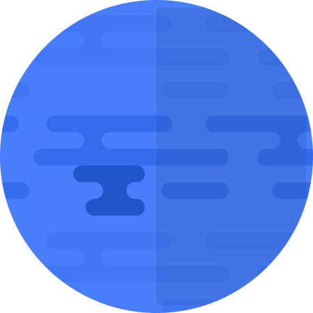
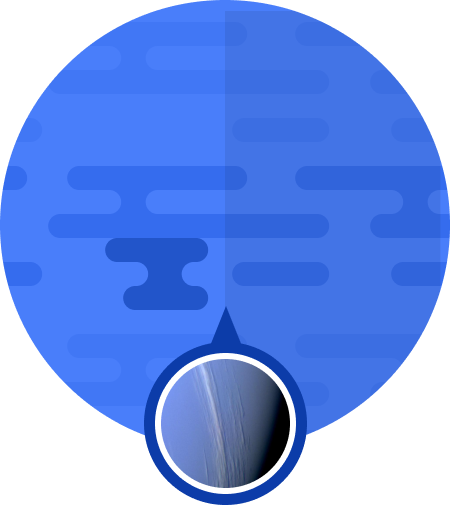
NEPTUNE
Neptune is the eighth and farthest-known Solar planet from the Sun. In the Solar System, it is the fourth-largest planet by diameter, the third-most-massive planet, and the densest giant planet. It is 17 times the mass of Earth, more massive than its near-twin Uranus.
Neptune's internal structure resembles that of Uranus. Its atmosphere forms about 5% to 10% of its mass and extends perhaps 10% to 20% of the way towards the core. Increasing concentrations of methane, ammonia and water are found in the lower regions.
Neptune's atmosphere is 80% hydrogen and 19% helium. A trace amount of methane is also present. Prominent absorption bands of methane exist at wavelengths above 600 nm, in the red and infrared portion of the spectrum.